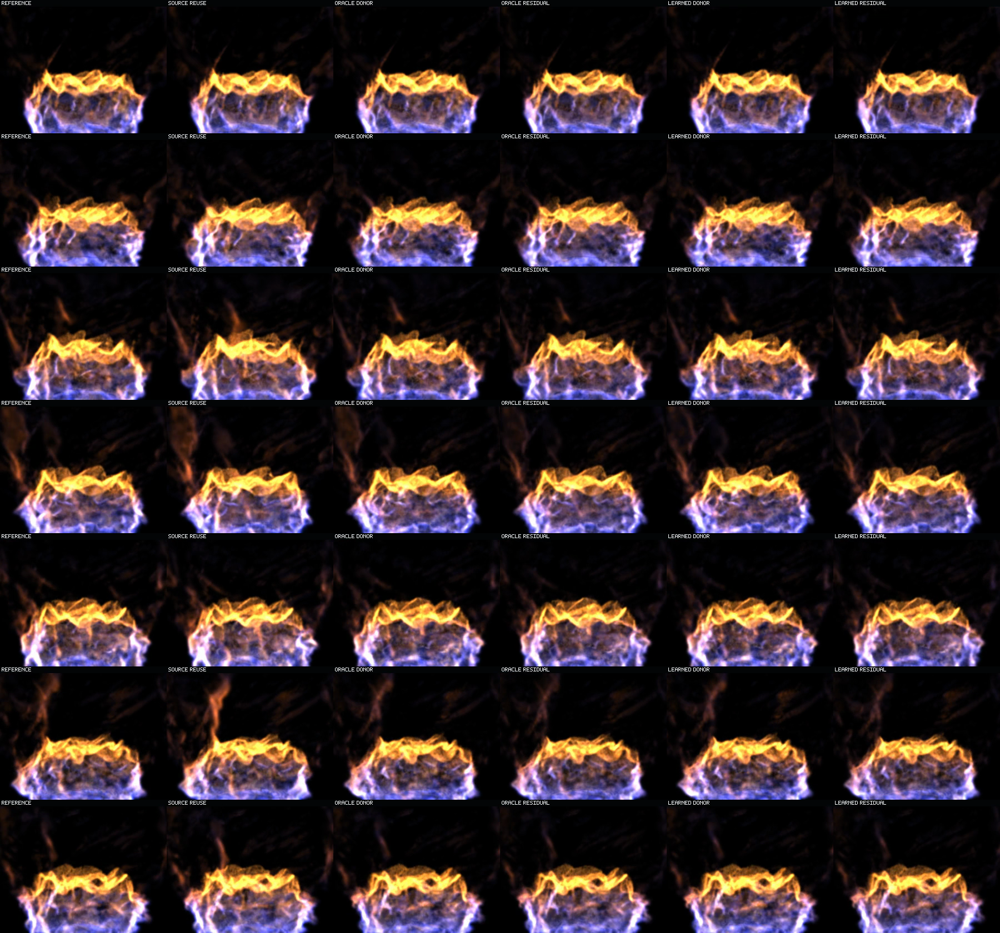
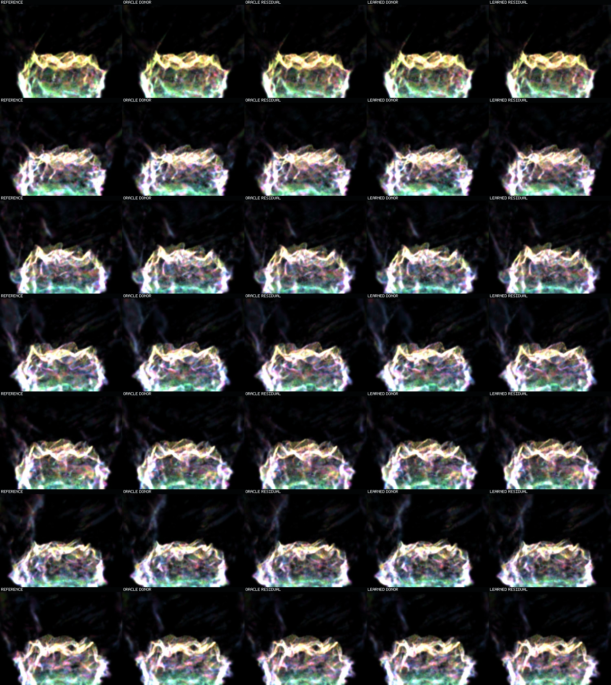

Question: Is the appearance residual head failing, or does learned local displacement hand it the wrong transported donor?
This is a one-step temporal sequence: every video frame is a separate exact adjacent heldout pair. It is not a recurrent rollout. Matched roles freeze exact target support, positions, and 16-feature candidate state; only nine non-position splat channels differ.
Left to right: exact reference; current source reused with its native differing support; oracle correspondence donor; oracle donor plus the frozen appearance residual; best-valid learned donor; learned donor plus the same frozen residual. The oracle-versus-learned gap isolates displacement quality while keeping model capacity fixed.
Matched-support roles only. Green marks Q1/Q2, yellow Q3, red Q4, blue transported, and magenta birth. This is display-only and does not mutate model state.
Rows sample pair indices 0 / 10 / 20 / 31 / 41 / 51 / 62, or target simulator times 0.16 / 1.76 / 3.36 / 5.12 / 6.72 / 8.32 / 10.08 seconds. Columns retain the six beauty roles above. This sheet is for checking early-to-late topology without mistaking six role columns for six moments in time.

The same seven temporal anchors under the display-only cohort mix. Columns are exact reference, oracle donor, oracle residual, learned donor, and learned residual. Thin-ridge discrepancies are easiest to localize here, but debug color is not a beauty judgment.

The same frozen residual improves both donor streams on every pair. Oracle residual aggregate MSE is 0.5141105; learned residual is 0.7101635. Oracle is 27.61% lower error and wins 63 of 63 pair comparisons. Direct inspection shows no late one-step blur collapse; the remaining learned-versus-oracle discrepancy is concentrated around fine crest ridges and wisps.
Across all pairs, learned displacement is forced to choose a valid local donor at 4,016,659 destinations. Its unconstrained head preferred death at 1,060,821 (26.41%). Unsupported births excluded from matched roles: 361,980. Source reuse is not allowed to impersonate matched support.
This witness diagnoses one-step appearance transport on one heldout basin through the isolated offline raster. Different appearance is not analytical-raymarch error. It does not prove recurrence, unsupported-birth synthesis, multi-basin generalization, runtime integration, or product closure. Operator motion acceptance remains pending.